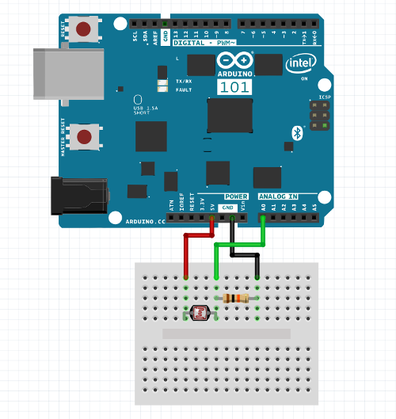
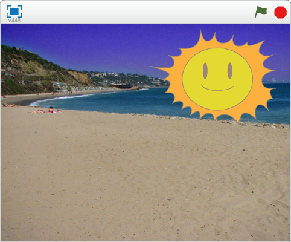
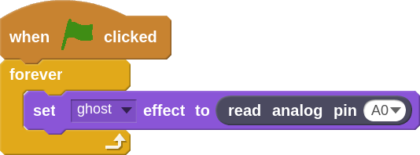
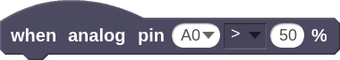

Light Sensor
Now that we have looked at connecting an output, an LED, to the Arduino, let's look at connecting an input. We are going to use a part called a photo cell. A photo cell acts like the resistor we used in our LED cloud design, expect the amount of "resistance" changes depending on how much light is shining on it.
In addition to the usual parts, for this project you will need:
The Circuit
This time we are going to use the analog pin so you will need to flip to the other side of the Arduino.

- Build the circuit above and connect the Arduino to a new Arduino 101 project
- Create a sprite that will represent a light source. For my example I created a sun on top of a beach background.

- We will use the following code to set the make the sun appear and disappear as light hits our photo cell sensor. The ghost effect sets how transparent the sun sprite will be. The read analog pin A0 block will read the light sensor connected to pin A0 and return a value between 0 - 100 depending on the brightness.

- Now try covering up the light sensor with you hand or pointing a flashlight at it. How does the sprite change?
- Now see how you can modify the code.
Can you:
- Make the sensor more or less sensitive by using the multiplication or division operator blocks?
- Make the sprite move around the screen using the light sensor reading?
- Advanced: Use the  to make something happen when it gets light or dark?
- Advanced: Incorporate an LED to light it up if it gets too dark out?